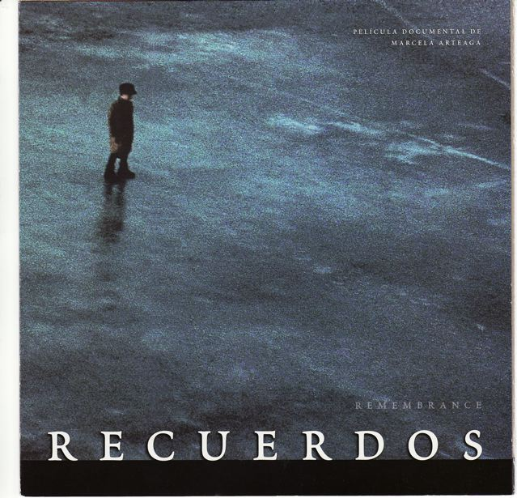

Reviews, Radio, TV and Film
LITERARY TRANSLATION
Introduction of Argentine Writer and Short Story(link to article and story)
Guardian Review
The Man Who Came to a Village (link to review)
Times Literary Supplement
Fire in Casabindo (link to review)
Times Literary Supplement
Bridging Acapanzingo and Christchurch (link to article)
In Other Words, Journal of the Translators Association
Radio BBC4 - “Tuesday Lives” Prod. Nigel Acheson
BBC World Service - “La Mujer en el Mundo” Prod. Selma Ortiz
Authored Works
My Innocent Absence, Tales From a Nomadic Life
The Independent (link to review)
Camden New Journal (link to review)
Islington Tribune (link to review)
West End Extra (link to review)
The Jewish Chronicle (link to review)
Exiled Ink (link to review)
The Lancet (link to review)
North and South (link to review)
University of Otago Magazine (pages 34-37)
Otago Daily Times (link to review)
The Buenos Aires Herald (link to review)
Italia Sera (link to review)
ESRA Magazine (link to review)
Amazon reviews (link to review)
The Jewish Quarterly (link to review)
Omni@Tuscania (link to review)
The Listener (link to review)
Radio National New Zealand – “Nine to Noon”
Plains FM – “Women On Air”
Irish Times, Q & A interview
Miriam Frank: Reading sharpened my understanding of human behaviour
http://www.irishtimes.com/culture/books/miriam-frank-reading-sharpened-my-understanding-of-human-behaviour-1.2075486 - .VOUbZ9Qlu08.facebook
Corriere di Viterbo, Viterbo News, http://www.viterbonews24.it/news/miriam-frank-presenta-il-suo-libro-my-innocent-absence_44006.htm
Il Quotidiani della Tuscia http://www.ontuscia.it/societa/cultura/tuscania-successo-per-la-presentazione-del-libro-my-innocent-absence-di-miriam-frank-156989
Tuscia Times http://www.tusciatimes.eu/tuscania-ricorda-il-pittore-kortokraks-con-my-innocent-absence-tales-from-a-nomadic-life/
October, 2016, Gyneka magazine, Greece.(link to review)
1 November, 2016, North and South magazine, New Zealand(link to review)
24 November 2016, Mountain Scene, Queenstown, New Zealand(Link to review)
RADIO and TV
Radio New Zealand : National : Nine To Noon
http://www.radionz.co.nz/national/programmes/ninetonoon/20101209
PlainsFM - Women on Air
http://plainsfm.org.nz/podcasts/programme/archive/women-air/?page=27
Radio Sant Cugat, Catalunya: Interview
http://cugat.cat/diari/entrevista/87649.htm
TV Sant Cugat, Catalunya: News
http://cugat.cat/noticies/Societat/87623.htm
Radio NZ – Sunday Morning Radio New Zealand, interview, with Wallace Chapman,
http://www.accessradio.org/Player.aspx?eid=12cf4b23-2219-40ab-b6ab-03e28451ccc0
Plains FM, “Bookend", in Canterbury radio,
http://www.plainsfm.org.nz/Programmes/Programme-Details.aspx?PID=22c349a0-f66a-4df5-ac05-1946c0290091
FILM
KORTOKRAKS - ICH BIN EINFACH NOCH NICHT TOT GENUG directed by Petra Hinterberger. (link to Trailer)
RECUERDOS directed by Marcela Arteaga(Link)
Received 3 prizes in the Mexican Film Festival in Guadalajara
|  |
|
.jpg) |
|
|

{kind=link}